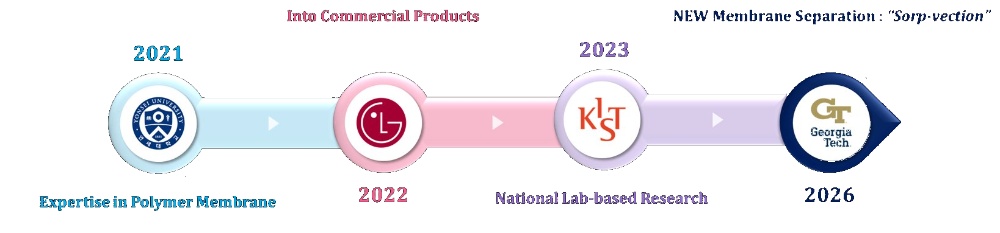

Jinyoung Kim, Ph.D.
Research Scientist II · Koros Group · Georgia Institute of Technology
Welcome! I am a chemical engineer with research interests in membrane separation and the synthesis of functional polymers, porous materials, and polymer composites. My work spans materials and systems design, experimental synthesis and characterization, and industrial applications, with a focus on developing materials based solutions to diverse technological challenges.
My research aims to bridge fundamental materials science and practical engineering by translating new materials and separation concepts into scalable technologies for energy, environmental, and industrial applications.
I currently lead the development of a novel CO₂ driven sorp-vection membrane separation process for selective purification of silicone oils, funded by The Dow Chemical Company. I work in the Koros Group at Georgia Tech in collaboration with Ryan Lively.
Positions
Education

News
- 2026 New — Received GTNext Award ($5k) for module design and fabrication research.
Research
Sorp-vection membrane separation
Development of a CO₂-driven sorp-vection process for selective purification of silicone oils by removing cyclic siloxanes. This emerging technology couples liquid-phase sorption with convective carrier gas sweep through hollow fiber membranes, enabling efficient separation without thermal degradation of the silicone product. (Funded by The Dow Chemical Company)
Hollow fiber membrane module design & scale-up
Design and fabrication of high-pressure hollow fiber membrane modules, including parametric studies of PDMS selective layer thickness, fiber count, and module geometry. Ongoing work on diagnosing and resolving performance changes during scale-up.
Porous polyimide aerogels & functional polymer composites
Synthesis of nano-porous monolithic and spherical polyimide aerogels with tunable pore size and porosity. Applications span thermal insulation, electromagnetic interference shielding, lithium-ion battery separators, and low-dielectric-constant films for semiconductor packaging.
Carbon molecular sieve (CMS) hollow fiber membranes
Pyrolysis protocols and precursor chemistry for CMS hollow fibers derived from polyimide precursors, targeting ultraselective H₂/CH₄ separation with scalable fabrication pathways.
Publications
12 publications as leading author · 12 as contributing author · Full list on Google Scholar. Bold = lead author. († equal contribution)
Leading Author Journal Articles
- 1.Kim, J., Ghufran, B., & Koros, W. J. "High-Pressure Hollow Fiber Membrane Module Design and Fabrication." Journal of Membrane Science Letters, Submitted, 2026.Submitted
- 2.Im, M., Kim, I., Oh, J., Nzisso, K. A. C., Kim, J., & Cho, S. "Multi-objective optimization of an ammonia-cracking process for hydrogen production using NSGA-III." International Journal of Hydrogen Energy, 225, 154421, 2026.
- 3.Kim, J., Cao, Y., Qiu, W., Liu, Z., Schlosser, S., Haghpanah, R., Katsoulis, D., Rose, J., Kim, S., Balogun, H. A., Lively, R., & Koros, W. J. "Sorp-Vection-Based Membrane Silicone Oil Purification." Angewandte Chemie, 2026, e202516848.DOI
- 4.Kim, J.†, Kim, G.†, Baek, S., Kwon, J., Kim, J., Kim, S. Y., ... & Han, H. "Simple assembling process for polyimide aerogel and its application in water pollutants absorption." Journal of Porous Materials, 29(3), 861–868, 2022.
- 5.Lee, J.; Baek, S.; Kim, J.; Lee, S.; Kim, J.*; Han, H.* "Highly Soluble Fluorinated Polyimides Synthesized with Hydrothermal Process towards Sustainable Green Technology." Polymers, 13(21), 3824, 2021.
- 6.Yuan-Hu, L.†, Kim, J.†, Lee, S., Kim, G., & Han, H. "Efficiency improvement of a fuel cell cogeneration plant linked with district heating." Applied Thermal Engineering, 117754, 2021.
- 7.Kim, J.†, Kim, G.†, Lee, S., Kim, Y., Lee, J., ... & Han, H. "Fabrication of highly flexible electromagnetic interference shielding polyimide carbon black composite using hot-pressing method." Composites Part B: Engineering, 109010, 2021.
- 8.Kim, G.†, Kim, J.†, Jeong, J., Lee, D., Kim, M., Lee, S., ... & Han, H. "High Temperature Applicable Separator by Using Polyimide aerogel/polyethylene Double-Layer Composite Membrane for High-Safety Lithium Ion Battery." Int. J. Electrochem. Sci, 14, 7133–7148, 2019.
- 9.Lee, D.†, Kim, J.†, Kim, S., Kim, G., Roh, J., Lee, S., & Han, H. "Tunable pore size and porosity of spherical polyimide aerogel by introducing swelling method." Microporous and Mesoporous Materials, 288, 109546, 2019.
- 10.Li Y.†, Kim, J.†, Kim, S., & Han, H. "Use of latent heat recovery from liquefied natural gas combustion for increasing the efficiency of a combined-cycle gas turbine power plant." Applied Thermal Engineering, 161, 114177, 2019.
- 11.Kim, J., Kwon, J., Lee, D., Kim, M., & Han, H. "Heat dissipation properties of polyimide nanocomposite films." Korean Journal of Chemical Engineering, 33(11), 3245–3250, 2016.
- 12.Kim, J., Kwon, J., Kim, S. I., Kim, M., Lee, D., Lee, S., ... & Han, H. "One-step synthesis of nano-porous monolithic polyimide aerogel." Microporous and Mesoporous Materials, 234, 35–42, 2016.
- 13.Kim, J., Kwon, J., Kim, M., Do, J., Lee, D., & Han, H. "Low-dielectric-constant polyimide aerogel composite films with low water uptake." Polymer Journal, 48(7), 829, 2016.
Contributing Author Journal Articles
- 14.Cao Y., Liu Z., Kim J., Schlosser S., Lively R. P. & Koros W. J. "High-efficiency separation of H₂/CH₄ using ultraselective carbon molecular sieve hollow fiber membranes." Advanced Materials, Submitted, 2026.Submitted
- 15.Liu, Z., Cao, Y., Qiu, W., Kim, J., Campbell, Z. S., Schlosser, S., & Koros, W. J. "Insights on influence of polymer molecular weight on gas sorption, transport and plasticization in glassy 6FDA-DAM polyimide membranes." Journal of Membrane Science, 712, 123242, 2024.
- 16.Kim, J., Baek, S., Lee, J., Lee, S., Ahn, C., Kim, J., & Han, H. "Improvement of trade-off between mechanical properties and dielectric of polyimide with surface modified silica nanoparticle for wafer level packaging." Journal of Industrial and Engineering Chemistry, 114, 438–445, 2022.
- 17.Kim, S. Y., Han, S., Lee, S., Kang, J. H., Yoon, S., Park, W., ... & Bae, Y. S. "Discovery of High-Performing Metal–Organic Frameworks for On-Board Methane Storage and Delivery via LNG–ANG Coupling." Advanced Science, 9(21), 2201559, 2022.
- 18.Lee, S., Kim, G., Kim, J., Kim, D., Lee, D., Han, H., & Kim, J. "Nitrogen-Doped Porous Carbon Structure from Melamine-Assisted Polyimide Sheets for Supercapacitor Electrodes." Advanced Sustainable Systems, 2(6), 1800007, 2018.
- 19.Kim, K., Yoo, T., Lee, J., Kim, M., Lee, S., Kim, G., ... & Han, H. "The effects of hydroxyl groups on the thermal and optical properties of poly(amide-imide)s with high adhesion for transparent films." Progress in Organic Coatings, 112, 37–43, 2017.
- 20.Kim, M., Kim, G., Kim, J., Lee, D., Lee, S., Kwon, J., & Han, H. "New continuous process developed for synthesizing sponge-type polyimide membrane and its pore size control method via NIPS." Microporous and Mesoporous Materials, 242, 166–172, 2017.
- 21.Kim, K., Yoo, T., Ha, H., Kim, J., Han, P., & Han, H. "The Effects of Amide Groups on the Thermal and Optical Properties of Poly(amide-imide)s with Low Residual Stress for Microelectronic Devices." Macromolecular Chemistry and Physics, 217(10), 1174–1184, 2016.
- 22.Kim, K., Yoo, T., Kim, J., Ha, H., & Han, H. "Effects of dianhydrides on the thermal behavior of linear and crosslinked polyimides." Journal of Applied Polymer Science, 132(6), 2015.
- 23.Kwon, J., Kim, J., Park, D., & Han, H. "A novel synthesis method for an open-cell microsponge polyimide for heat insulation." Polymer, 56, 68–72, 2015.
- 24.Kwon, J., Kim, J., Park, D., Seo, J., Han, P., & Han, H. "Water sorption behavior in polyimide thin films controlled by inorganic additives." Macromolecular Research, 22(4), 431–435, 2014.
- 25.Kwon, J., Kim, J., Lee, J., Han, P., Park, D., & Han, H. "Fabrication of polyimide composite films based on carbon black for high-temperature resistance." Polymer Composites, 35(11), 2214–2220, 2014.
- 26.Kwon, J., Kim, J., Yoo, T., Park, D., & Han, H. "Preparation and characterization of spherical polyimide aerogel microparticles." Macromolecular Materials and Engineering, 299(9), 1081–1088, 2014.